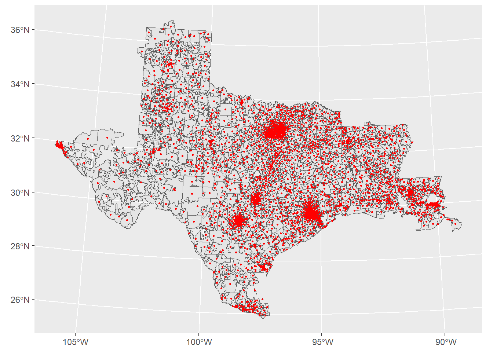
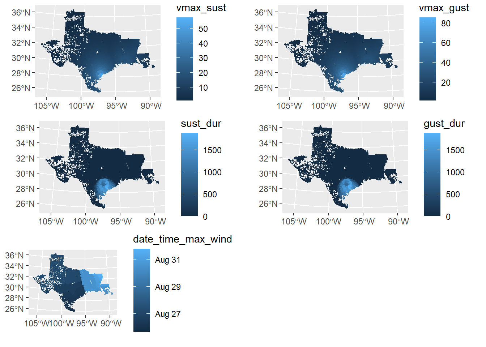

library(hurricaneexposuredata)
library(stormwindmodel)
library(tidyverse)
data("hurr_tracks")
AL092017_track <- hurr_tracks %>%
filter(usa_atcf_id == "AL092017") %>%
select(-c(storm_id, usa_atcf_id))2 stormwindmodel for Harvey
2.1 Data Procurement
- Hurricane track data was downloaded from the
hurricaneexposuredatapackage using thedata("hurr_tracks")command. This data originates from the HURDAT2. - ZCTA to County Crosswalk was downloaded from https://www2.census.gov/geo/docs/maps-data/data/rel/zcta_county_rel_10.txt
- ZCTA shapefiles were downloaded for the entire US using the
tigrispackage
A vignette for the hurricaneexposuredata package can be found here
2.2 Data Processing
The stormwindmodel estimates wind exposure for points. In this case we used wind exposure at ZCTA geometric centroids to estimate wind exposure for the entire ZCTA.
- Hurricane data was downloaded using
hurricaneexposuredatapackage using thedata("hurr_tracks")command and filtered using the Harvey Automated Tropical Cyclone Forecasting code (AL092017) - Separately, 2017 ZCTAs downloaded from the US Census Cartographic Boundary Files
- Then, the ZCTAs were joined to the US Census ZCTA to County Crosswalk in order to identify Texas and Louisiana ZCTAs
- The ZCTAs were filtered to Texas and Louisiana
- Geometrics centroids were calculated for each ZCTA
- The
calc_grid_windsandsummarize_grid_windscommands were used to calculate wind exposure for each centroid. It works by- Imputing the hurricane track to every 15 minutes
- Adding the wind radii from the HURDAT2
- Modeling wind exposure for each point
More information about the stormwindmodel package and variables calculated are included in this vignette
2.3 Output
TXLA_ZCTA_AL092017_stormwindmodel- GEOID - ZCTA
- date_time_max_wind - UTC date & time where maximum wind was sustained
- vmax_sust - Maximum 10-m 1-min sustained wind for the tropical cyclone (m/s)
- vmax_gust - Max 10-m 1-min gust wind experienced at grid point (m/s)
- sust_dur - Duration of time a certain sustained wind was experienced at grid point (minutes)
- gust_dur - Duration of time a certain gust wind was experienced at grid point (minutes)
2.4 Code
Storm track data is filtered for Hurricane Harvey
ZCTA geo-centoids were calculated
library(tigris)
library(sf)
ZCTAs <- read_csv("https://www2.census.gov/geo/docs/maps-data/data/rel/zcta_county_rel_10.txt") %>%
filter(STATE %in% c(48, 22)) %>%
distinct(ZCTA5) %>%
rename(GEOID = ZCTA5)
ZCTAs_sf <- ZCTAs %>%
left_join(zctas(cb = FALSE, year = 2017), by = join_by(GEOID == GEOID10)) %>%
st_as_sf() %>%
select(-c(ZCTA5CE10, CLASSFP10, MTFCC10, FUNCSTAT10, ALAND10, AWATER10, INTPTLAT10, INTPTLON10))
ZCTAs_center <- ZCTAs_sf %>%
st_transform("ESRI:102003") %>%
st_centroid() %>%
st_transform("EPSG:4269")
ZCTAs_centers_df <- ZCTAs_center %>%
mutate(gridid = GEOID,
glat = map_dbl(geometry, function(geo) st_coordinates(geo)[[2]]),
glon = map_dbl(geometry, function(geo) st_coordinates(geo)[[1]]),
glandsea = as.logical(1)) %>%
select(gridid, glat, glon, glandsea) %>%
st_drop_geometry()Geo-centroids
ggplot() +
geom_sf(data = ZCTAs_sf) +
geom_sf(data = ZCTAs_center, color = "red", size = 0.6) +
coord_sf(crs = st_crs("ESRI:102003"))
Calculated wind exposure
AL092017_grid_winds <- calc_grid_winds(hurr_track = AL092017_track,
grid_df = ZCTAs_centers_df)
# parsing error was present in the package's code
summarize_grid_winds_fix <- function (grid_winds, gust_duration_cut = 20, sust_duration_cut = 20,
tint = 0.25) {
calc_sust_dur <- function(wind) {
60 * tint * sum(wind > sust_duration_cut, na.rm = TRUE)
}
calc_gust_dur <- function(wind) {
60 * tint * sum(wind > gust_duration_cut, na.rm = TRUE)
}
grid_wind_summary <- tibble::tibble(gridid = colnames(grid_winds),
date_time_max_wind = rownames(grid_winds)[apply(grid_winds,
MARGIN = 2, FUN = which.max)], vmax_sust = apply(grid_winds,
MARGIN = 2, FUN = max, na.rm = TRUE), vmax_gust = .data$vmax_sust *
1.49, sust_dur = apply(grid_winds, MARGIN = 2, FUN = calc_sust_dur),
gust_dur = apply(grid_winds, MARGIN = 2, FUN = calc_gust_dur)) %>%
dplyr::mutate(date_time_max_wind = ifelse(.data$vmax_sust ==
0, NA, .data$date_time_max_wind))
return(grid_wind_summary)
}
AL092017_winds <- summarize_grid_winds_fix(AL092017_grid_winds$vmax_sust) %>%
rename(GEOID = gridid)AL092017_winds_sf <- AL092017_winds %>%
left_join(zctas(cb = FALSE, year = 2017), by = join_by(GEOID == GEOID10)) %>%
st_as_sf() %>%
mutate(date_time_max_wind = as_datetime(date_time_max_wind)) %>%
select(-c(ZCTA5CE10, CLASSFP10, MTFCC10, FUNCSTAT10, ALAND10, AWATER10, INTPTLAT10, INTPTLON10))Plotted wind measures
library(gridExtra)
output_maps <- c("vmax_sust", "vmax_gust", "sust_dur", "gust_dur", "date_time_max_wind") %>%
map(~
AL092017_winds_sf %>%
ggplot() +
geom_sf(aes(fill = !!sym(.x)), color = NA) +
coord_sf(crs = st_crs("ESRI:102003"))
)
do.call(grid.arrange, c(output_maps, ncol = 2))
# output: false
AL092017_winds %>%
st_write("output/TXLA_ZCTA_stormwindmodel.gpkg", "TXLA_ZCTA_stormwindmodel", append = FALSE)Deleting layer `TXLA_ZCTA_stormwindmodel' using driver `GPKG'
Writing layer `TXLA_ZCTA_stormwindmodel' to data source
`output/TXLA_ZCTA_stormwindmodel.gpkg' using driver `GPKG'
Writing 2455 features with 6 fields without geometries.